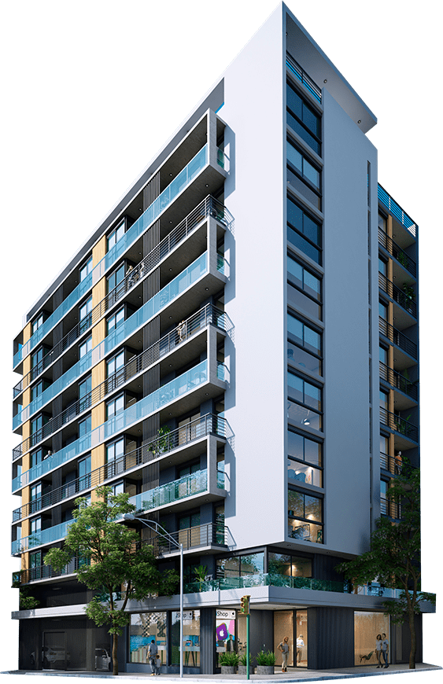

Torre Munich destaca con un estilo que asemeja a la pintoresca ciudad alemana que le da nombre al proyecto. Una arquitectura de finas terminaciones, contemporánea, que brinda una experiencia de vanguardia.
Situado en una esquina estratégica del Barrio Cordón, ofrece un completo acceso a puntos clave de la ciudad, muy cercano a facultades, hospitales, plazas, centros comerciales y otros servicios. Está a pasos de cuatro arterias principales de Montevideo, lo que permite un desplazamiento con total libertad tanto dentro como fuera del barrio.
Proyecto con Exoneraciones Fiscales amparado bajo la Ley de vivienda promovida.
4.151 m² construidos
57 unidades
1 local comercial
30 garajes
Un piso de amenities
Proyecto con energías renovables